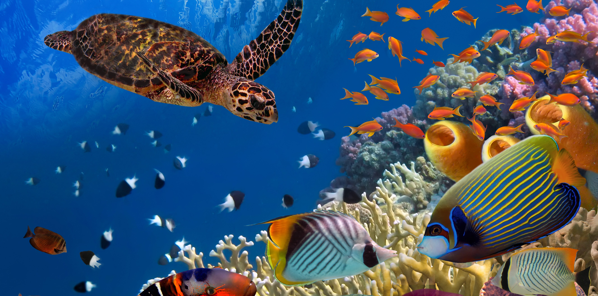
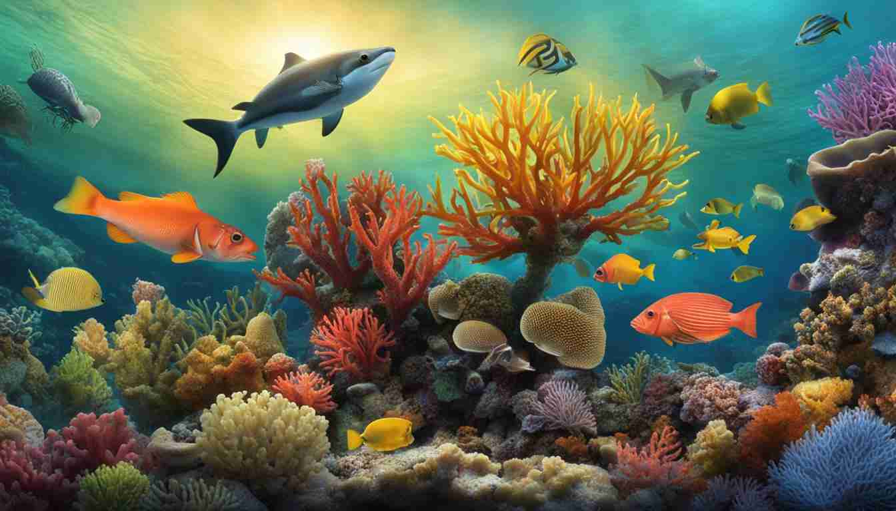
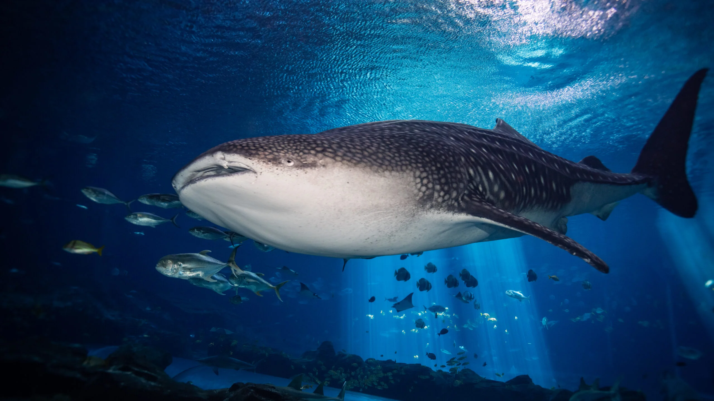
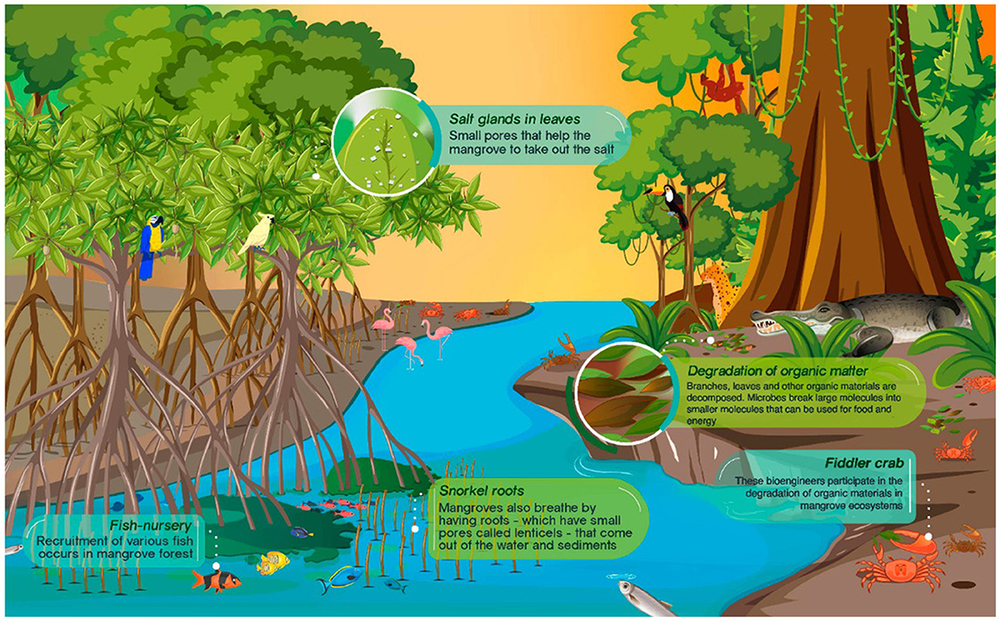
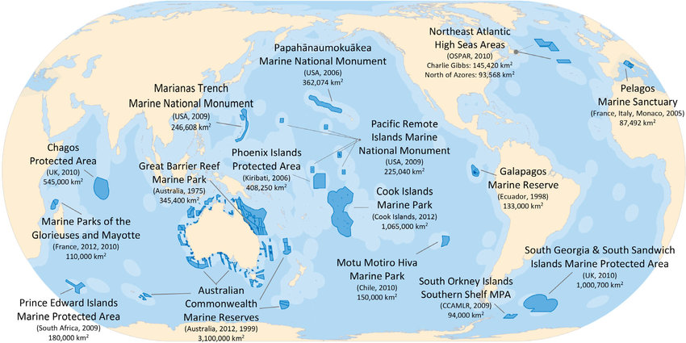

The ocean covers more than 70% of Earth’s surface, and it is teeming with life. Marine biodiversity encompasses not only large vertebrates like fish, whales, and dolphins but also numerous microscopic organisms that form the base of the marine food web. Each species plays a vital role—some maintain healthy coral reefs, while others filter water or recycle nutrients.
Sadly, human activities such as overfishing, pollution, and climate change continue to threaten marine biodiversity. Efforts to protect and restore marine habitats are essential if we are to secure the ocean’s natural treasures and the services they provide.
Coral reefs are sometimes described as the “rainforests of the sea,” owing to their incredible richness in species. Despite covering less than 1% of the ocean floor, coral reefs support about 25% of all known marine species. They provide shelter, breeding grounds, and nourishment for countless organisms, from tiny shrimp to large predatory fish.
Reefs also protect coastlines from erosion by acting as natural breakwaters. However, factors like ocean acidification and coral bleaching pose significant threats to these fragile ecosystems. Conservation efforts, such as coral transplantation and the establishment of marine protected areas, are key to safeguarding coral reefs for future generations.
Whale sharks are the largest fish in the sea, reaching lengths of up to 40 feet or more. Despite their massive size, these gentle giants are filter feeders, primarily dining on plankton and tiny fish. Sightings of whale sharks often become major tourist attractions, highlighting how marine biodiversity can contribute to local economies.
However, these magnificent creatures are vulnerable to habitat loss, boat strikes, and entanglement in fishing gear. Conservation programs around the world are focused on tagging and tracking whale sharks to learn more about their migratory paths, enabling better protection efforts and international collaboration.
Mangroves are coastal forests found in tropical and subtropical regions. These unique ecosystems are characterized by salt-tolerant trees and are home to a wide array of species, including crabs, fish, and birds. Mangroves also act as nurseries for many marine organisms, providing a safe environment for juvenile fish to grow before venturing out to coral reefs and open waters.
Besides supporting biodiversity, mangrove forests protect shorelines from storms and mitigate climate change by sequestering carbon in their extensive root systems. Unfortunately, mangrove habitats are often cleared for urban development or aquaculture. Sustainable coastal management practices are essential for preserving these vital ecosystems.
Marine Protected Areas (MPAs) are sections of the ocean where human activities are managed or restricted to safeguard natural or cultural resources. MPAs can range from small, community-managed reserves to vast ocean sanctuaries. By limiting fishing, development, and other disturbances, MPAs help restore fish populations, protect habitats, and preserve biodiversity hotspots.
Although the global coverage of MPAs has increased in recent years, many marine regions remain unprotected or poorly managed. Ensuring effective governance, enforcement of regulations, and collaboration with local communities are essential to the success of MPAs. By expanding and effectively managing these areas, we can create sustainable models that balance human use with ecological preservation.